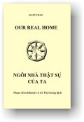

|
BuddhaSasana Home Page |
Vietnamese, with Unicode Times font |
|  |
NGÔI
NHÀ THẬT SỰ CỦA TA Tác
Giả: Ngài Ajahn Chah |
|
G iờ đây Cụ hãy lập tâm thành kính lắng nghe Giáo Pháp. Trong khi Sư giảng, Cụ hãy chăm chú lắng nghe những lời của Sư cũng giống như chính Ðức Phật đang ngồi trước mặt. Hãy nhắm mắt lại và giữ thân thoải mái, lắng tâm an trụ vào một điểm. Ðể tỏ lòng tôn sùng kỉnh mộ bậc Toàn Giác Cụ hãy từ tốn để cho trí tuệ, chân lý và trạng thái thanh khiết của Tam Bảo đi thẳng vào và an định trong tâm Cụ.Hôm nay Sư không mang đến biếu Cụ quà tặng vật chất nào, chỉ có Giáo Pháp, những lời dạy của Ðức Phật. Hãy chăm chú lắng nghe. Cụ nên nhận thức rằng dù chính Ðức Phật đi nữa -- với kho tàng đức hạnh vĩ đại mà Ngài đã tích trữ từ vô lượng kiếp -- vẫn không thể tránh khỏi cái chết của cơ thể vật chất. Khi tuổi già đến, Ngài không bám níu vào thân mà buông bỏ, đặt xuống gánh nặng. Giờ đây Cụ cũng vậy, cũng phải học bài học thỏa mãn với bao nhiêu năm tháng đã trải qua tùy thuộc vào tấm thân nầy. Cụ nên cảm nghe rằng bao nhiêu đó đã đủ rồi. Cụ có thể so sánh thân nầy với những món đồ dùng trong nhà mà Cụ đã mua sắm từ lâu -- những cái tách, cái dĩa, cái tô, cái bát v.v... Khi mới mua về thì nó sạch sẽ bóng ngời. Nhưng đến nay, sau một thời gian lâu dài bị xử dụng nó đã bắt đầu hư cũ. Một mớ đã bể, mớ khác bị thất lạc, mất đi, và những món còn lại thì đang dần dần hư hoại, nó không có một hình thể ổn định thường còn, và bản chất thiên nhiên của nó là vậy. Cơ thể của Cụ cũng dường thế ấy -- luôn luôn chuyển biến ngay từ lúc được sanh vào đời và xuyên qua thời niên thiếu rồi tráng niên, chí đến ngày nay mà Cụ đã già, nó vẫn liên tục biến đổi. Cụ phải chấp nhận điều nầy. Ðức Phật dạy rằng các vật hữu lậu [*], dầu thuộc về cơ thể vật chất, hiện hữu do những điều kiện ở bên trong tạo duyên, hay dầu ở bên ngoài, do những điều kiện bên ngoài tạo duyên, đều là vô ngã. Bản chất thiên nhiên của nó là luôn luôn biến đổi. Hãy quán tưởng chân lý nầy cho đến khi Cụ nhìn thấy rõ ràng như vậy.
Chính cái khối thịt đang suy tàn nằm ở đây là chánh pháp (saccadhamma), là chân lý. Chân lý của cơ thể nầy là chánh pháp, và đó là giáo huấn bất di dịch của Ðức Bổn Sư. Ðức Phật dạy ta hãy nhìn vào thân nầy, hãy quán chiếu và suy niệm cho đến khi thấu triệt bản chất thật sự của nó. Chúng ta phải có thể sống an lạc với thân nầy, dầu nó ở trong trạng thái nào. Ðức Phật dạy chúng ta phải tự đảm bảo rằng chỉ có cơ thể vật chất bị nhốt trong tù, và không để cái tâm cũng bị cảnh lao tù chung với nó. Giờ đây thân thể bắt đầu suy tàn và hư hoại với thời gian. Không nên cưỡng lại, nhưng cũng không nên để cho cái tâm cũng suy tàn với nó. Hãy tách rời, giữ tâm riêng ra. Hãy tăng cường tâm lực bằng cách nhận thức thực tướng của sự vật. Ðức Thế Tôn dạy rằng đó là bản chất thiên nhiên của thân, không thể có cách nào khác: đã được sanh ra tức nhiên phải đi dần đến tuổi già, bệnh hoạn và chết. Ðây là chân lý vĩnh cửu mà Cụ đang chứng nghiệm trong giờ phút hiện tiền. Cụ hãy nhìn lại thân mình với trí tuệ và nhận thức chân lý nầy. Nếu cái nhà của Cụ bị trận lụt cuốn trôi đi, hoặc bị hỏa hoạn thiêu đốt tàn rụi, dầu hiểm họa lụt lội hay hỏa hoạn nào đe dọa, hãy để cho cái nhà lo lắng. Những hiểm họa ấy chỉ liên quan đến cái nhà. Nếu có lụt lội, chớ nên để cho nó tràn ngập và lôi cuốn tâm. Nếu có hỏa hoạn, chớ nên để cho nó thiêu đốt tâm. Cái nhà là vật ở bên ngoài, Cụ hãy để cho nó bị lôi cuốn theo dòng nước lụt, hay cháy thành tro trong trận hỏa hoạn. Hãy để cho tâm buông bỏ, không bám níu vào ngôi nhà. Thời gian đã chín mùi. Cụ đã sống trong một thời gian khá lâu dài. Mắt Cụ đã thấy nhiều hình thể và màu sắc, tai Cụ đã nghe nhiều âm thanh, Cụ đã có bao nhiêu kinh nghiệm. Và tất cả chỉ là thế -- chỉ là kinh nghiệm. Cụ đã ăn nhiều thức ăn ngon, và những vị ngọt bùi ấy chỉ là vị ngọt bùi. Không có gì hơn nữa. Những vị đắng cay cũng chỉ là những vị đắng cay. Chỉ thế thôi. Nếu mắt Cụ nhìn thấy những hình sắc đẹp đẽ thì nó cũng chỉ là những hình sắc đẹp đẽ. Tất cả chỉ có thế. Một hình thể xấu xí cũng vậy. Chỉ là hình thể xấu xí. Tai nghe những điệu hát mê ly êm dịu và nó cũng chỉ có thế, không có gì hơn. Một âm thanh chát chúa ồn tai cũng chỉ giản dị là vậy. Ðức Phật dạy rằng giàu hay nghèo, trẻ hay già, người hay thú, không có chúng sanh nào trên thế gian nầy có thể giữ mình nguyên vẹn trong bất cứ trạng thái nào trong một thời gian lâu dài. Tất cả đều phải đổi thay và trở thành một cái gì khác. Ðó là thực tại của đời sống mà ta không thể làm thế nào để cứu vãn. Tuy nhiên, Ðức Phật dạy rằng điều mà ta có thể làm được là tự quán chiếu thân để nhìn thấy đặc tướng vô ngã của nó, để nhận thức rằng cả hai, thân và tâm, không có cái nào là "Ta" hay "Của Ta". Nó chỉ hiện hữu một cách tạm thời. Cũng như cái nhà nầy, nó chỉ là của Cụ trên danh nghĩa. Cụ không thể đem nó đi nơi nào với Cụ được. Cùng thế ấy, tài sản sự nghiệp, thân bằng quyến thuộc của Cụ, tất cả đều chỉ là của Cụ trên danh nghĩa, trong lời nói, chớ không thật sự thuộc về Cụ. Nó thuộc về thiên nhiên. Chân lý nầy không áp dụng riêng cho đơn độc một mình Cụ. Tất cả mọi người đều cùng chung một số phận, chí đến Ðức Thế Tôn và các Thánh Ðệ Tử của Ngài cũng vậy. Có khác chăng là các vị ấy chấp nhận rằng đó là bản chất thiên nhiên của sự vật; các Ngài thấy rằng đường lối thiên nhiên của sự vật là vậy. Không có cách nào khác. Do đó Ðức Phật dạy ta tự quán chiếu và tỉ mỉ khảo sát thân nầy từ lòng bàn chân lên đến đỉnh đầu, và từ đỉnh đầu xuống trở lại lòng bàn chân. Hãy thử nhìn. Cụ thấy những gì? Có cái chi tự nó là tinh khiết không? Toàn thể thân nầy vững vàng tiến dần đến tan rã, và Ðức Phật dạy ta thấy rằng nó không thuộc về của ta. Lẽ dĩ nhiên, cơ thể nầy phải là vậy, bởi vì tất cả những hiện tượng hữu lậu đều có tánh cách phải chuyển biến, đổi thay. Ta có thể làm gì khác hơn được? Ðúng thật ra, bản chất của thân là vậy thì không có gì là sai. Không phải thân làm cho ta đau khổ. Khi Cụ nhìn điều phải một cách sai lầm thì đương nhiên Cụ phải nhầm lẫn. Cũng như nước trong dòng sông, tự nhiên trôi chảy từ cao xuống thấp, không bao giờ từ thấp chảy lên cao. Ðó là đặc tánh thiên nhiên của nó. Nếu người kia đứng trên bờ sông nhìn thấy nước chảy từ trên cao xuống lại điên cuồng ước muốn rằng nước phải chảy ngược trở lên dốc cao thì lẽ dĩ nhiên, người ấy phải thất vọng, đau khổ. Dầu ông ta có làm gì đi nữa, đường lối suy tư sai lầm của ông cũng không để cho tâm trí ông được yên ổn, an lạc, thanh bình. Ông bất toại nguyện vì quan kiến của ông sai lầm, và ông suy tư ngược dòng. Nếu có quan kiến chân chánh, ông sẽ thấy rằng nước tự nhiên phải chảy từ trên cao xuống thấp, và chí đến khi nhận thức rõ ràng và chấp nhận thực trạng nầy, người ấy vẫn còn rối loạn và buồn phiền. Dòng nước của con sông phải trôi chảy từ trên dốc cao xuống thấp, cũng giống như cơ thể của Cụ. Ðã có một thời là trẻ trung. Cụ trở thành già nua, và hiện đang quanh co hướng về cái chết. Chớ nên ước muốn nó phải như thế nào khác. Ðó không phải là điều gì mà Cụ có khả năng hay quyền lực cứu chữa. Ðức Phật dạy ta nên sáng suốt nhận thấy đường lối của sự vật rồi buông xả, không bám níu vào nó. Cụ nên lấy cảm nghĩ buông bỏ ấy làm nơi nương tựa. Hãy tiếp tục hành thiền, dầu Cụ có cảm nghe mệt mỏi và kiệt sức. Hãy để tâm an trụ vào hơi thở. Thở vài hơi dài rồi cột giữ tâm vào đó. Khi thở vô, niệm thầm, "Bud", thở ra, niệm thầm, "Dho" [*]. Hãy tập có thói quen thực hành như vậy. Cụ càng cảm nghe kiệt lực thì càng nên cố gắng chú tâm vi tế hơn, nhờ đó có thể đáp ứng thích nghi tình trạng đau khổ đang phát triển. Khi vừa bắt đầu nghe mệt Cụ hãy ngưng hết mọi suy tư và gom tâm vững chắc hiểu biết hơi thở. Luôn luôn niệm thầm "Bud-Dho, Bud-Dho", trong khi theo dõi hơi thở.
Hãy buông trôi, bỏ qua tất cả những gì ở bên ngoài. Không nên cố bám vào những ý nghĩ về con cái hay họ hàng. Không bám vào điều gì, bất luận gì. Hãy buông bỏ. Hãy để cho tâm tập trung vào một điểm duy nhất và dùng tâm an trụ ấy theo dõi hơi thở. Chỉ hay biết hơi thở. Hơi thở là đối tượng duy nhất của tâm. Ngoài hơi thở không hay biết gì khác. Tập trung tư tưởng như vậy cho đến khi tâm trở thành ngày càng vi tế, cảm giác ngày càng không đáng kể, và chừng ấy Cụ sẽ thấy nội tâm trở nên giác tỉnh và vô cùng trong sáng. Chừng ấy, khi cảm giác đau khổ phát sanh, tự nó sẽ dần dần tan biến. Cuối cùng Cụ sẽ nhìn hơi thở như người bà con đến viếng. Khi người bà con ra về, ta đưa ra cửa để tiển chân và nhìn theo cho đến khi người ấy, đi bộ hay lái xe khuất dạng rồi ta mới trở lại vào nhà. Ta cũng theo dõi hơi thở cùng thế ấy. Nếu hơi thở thô kịch, ta hiểu biết rằng nó thô. Nếu là vi tế, ta hiểu biết rằng nó vi tế. Khi nó trở thành càng lúc càng vi tế hơn, ta cứ tiếp tục theo dõi, tâm luôn luôn giác tỉnh. Ðến một lúc nào hơi thở hình như mất luôn, và tất cả những gì còn lại chỉ là cảm giác tỉnh thức. Ðó gọi là gặp Ðức Phật. Ta có sự hay biết rõ ràng trong trạng thái tỉnh thức gọi là "Buddho", người hay biết, người giác tỉnh, người minh mẫn sáng suốt. Ðó là gặp và an trú với Ðức Phật, với trí tuệ và giác ngộ. Bởi vì chỉ có vị Phật lịch sử nhập Ðại Niết Bàn (Parinibbàna), vị Phật bằng thịt bằng da. Còn vị Phật thật sự, vị Phật toàn giác toàn tri, ngày nay ta vẫn còn có thể chứng nghiệm và đạt đến, và vào lúc bấy giờ tâm chỉ có một. Như vậy, hãy buông bỏ, đặt xuống tất cả, tất cả ... ngoại trừ sự hay biết. Chớ nên để bị mê hoặc nếu có hình ảnh hay âm thanh khởi phát trong khi hành thiền. Hãy bỏ xuống tất cả. Không nên giữ lấy bất cứ gì. Chỉ an trú trong trạng thái tỉnh thức vô nhị ấy. Chớ nên lo âu cho quá khứ hay vị lai, chỉ ở yên bất động và Cụ sẽ đạt đến nơi mà không còn tiến, không còn thối, và không còn dừng, nơi mà không còn gì để chấp thủ hoặc dính mắc. Tại sao? Bởi vì không còn tự ngã, không còn "Tôi" hay "Của Tôi". Tất cả đều bị bỏ lại, mất đi. Ðức Phật dạy ta nên, bằng cách nầy, làm cho mình trở nên rỗng không, không có gì cả, không mang theo bất cứ gì. Hãy hiểu biết, và đã biết, hãy buông bỏ. Chứng ngộ Giáo Pháp (Dhamma), con đường giải thoát ra khỏi vòng sanh tử triền miên, là công việc mà tất cả chúng ta phải làm đơn độc, mỗi người cho riêng mình. Như vậy Cụ hãy cố gắng buông bỏ và lãnh hội đầy đủ những lời dạy của Ðức Bổn Sư, thật sự tận lực quán niệm. Không nên bận tâm lo âu cho gia đình. Trong hiện tại các con cháu Cụ như thế nào thì họ là vậy, và trong tương lai họ sẽ cũng như Cụ. Trên thế gian không ai có thể lẫn tránh số phận nầy. Ðức Phật dạy ta hãy đặt xuống tất cả những gì không chứa đựng thực chất. Nếu đặt xuống tất cả, Cụ sẽ thấy chân lý. Nếu không, sẽ không thấy. Nó là vậy, và nó là như vậy đối với tất cả mọi người. Vì thế, Cụ chớ nên lo âu hoặc bám níu vào bất cứ gì. Cho dù Cụ tự thấy mình đang suy tư thì cũng tốt vậy, miễn là suy tư sáng suốt. Chớ nên suy tư điên cuồng. Nếu Cụ nghĩ nhớ con cháu, hãy nhớ với trí tuệ. Không nên nghĩ nhớ một cách điên rồ. Bất luận gì mà tâm hướng về, Cụ nên suy tư và hiểu biết nó với trí tuệ, sáng suốt nhận thức bản chất thiên nhiên của nó. Nếu Cụ hiểu biết với trí tuệ ắt Cụ sẽ buông bỏ và sẽ không đau khổ, tâm minh mẫn sáng suốt, hoan hỷ và an lạc, không bị khuấy động, không bị phân tán. Ngay trong lúc nầy, điều mà Cụ có thể tìm đến nương nhờ để được hỗ trợ và nâng đỡ là hơi thở của Cụ. Ðó là việc làm của chính Cụ, không phải của ai khác. Hãy để cho người khác làm công việc của họ. Cụ có bổn phận và trách nhiệm của mình và không thể ôm lấy phần việc của ai khác trong gia đình. Không dành công việc của ai, mà buông bỏ. Sự buông bỏ nầy sẽ làm cho tâm Cụ trở nên vắng lặng. Nhiệm vụ duy nhất của Cụ hiện thời là gom tâm lại và đưa nó an trú trong trạng thái vắng lặng. Tất cả những gì khác, hãy để người khác lo. Những hình sắc, những âm thanh, mùi, vị -- hãy để cho người khác lo. Hãy bỏ tất cả lại sau lưng và làm công việc của mình. Bất luận gì phát sanh trong tâm, dầu đó là lo sợ đau nhức, lo sợ chết, băn khoăn lo lắng cho người hay gì gì khác, Cụ hãy nói với nó: "Chớ có khuấy rầy tôi! Các người không còn là công việc của tôi nữa." Cụ cứ nói như vậy với chính Cụ, khi các pháp (dhammas) ấy khởi phát. Danh từ "dhamma", pháp, hàm xúc ý nghĩa gì? Tất cả đều là pháp. Không có cái chi không phải là pháp, dhamma. Còn "thế gian" là gì? Thế gian chính là trạng thái tâm đang làm cho Cụ giao động trong hiện tại. "Người nầy sẽ làm gì?" Khi ta chết rồi, ai sẽ chăm sóc trông chừng chúng nó? Chúng nó sẽ xoay xở như thế nào? Tất cả những điều ấy chỉ là "thế gian". Dầu sự phát sanh suông của một ý tưởng lo sợ chết, hay lo sợ đau nhức, cũng là thế gian. Hãy vứt bỏ thế gian đi! Thế gian là vậy. Nếu Cụ để cho nó khởi phát trong tâm và dần dần xâm chiếm tiềm thức, tâm Cụ sẽ trở nên lu mờ và không tự thấy chính nó. Vì thế ấy, bất luận gì phát hiện trong tâm, Cụ cứ một mực nói: "Cái nầy không phải là công việc của tôi. Nó là vô thường, khổ, và vô ngã." Nghĩ rằng Cụ muốn tiếp tục sống thêm lâu dài, sẽ làm cho Cụ đau khổ. Nhưng nghĩ rằng Cụ muốn chết ngay trong tức khắc, hay sớm chết đi cho rồi, thì cũng không đúng. Nó cũng làm cho Cụ đau khổ, có phải vậy không, thưa Cụ? Các vật hữu lậu không thuộc quyền sở hữu của ta. Nó phải diễn tiến theo những định luật thiên nhiên của nó. Về phương cách mà thân nầy phải như thế nào Cụ không thể làm gì được. Cụ có thể làm cho nó đẹp hơn thêm đôi chút, hay làm cho cái hình dáng bề ngoài của nó có phần hấp dẫn và sạch sẽ hơn trong một lúc, như các thiếu nữ điểm trang, dồi phấn thoa son, để móng tay dài, nhưng khi tuổi già đến thì tất cả mọi người đều cùng chung một hội một thuyền, một số phận. Thân nầy là vậy. Cụ không thể làm gì khác. Nhưng điều mà Cụ có thể cải thiện, làm cho đẹp đẽ hơn, là cái tâm của Cụ. Bất cứ ai cũng có thể xây dựng một ngôi nhà, bằng gỗ hay bằng gạch, nhưng Ðức Phật dạy rằng loại nhà ấy không phải thật sự là của ta, mà chỉ là của ta trên danh nghĩa. Nó là cái nhà trong thế gian, và nó phải theo đường lối của thế gian. "Ngôi nhà thật sự của chúng ta" là trạng thái an tĩnh bên trong. Một cái nhà vật chất ở ngoại cảnh có thể đẹp, nhưng nó không mấy an tĩnh. Nó là nguyên nhân tạo lo âu nầy đến âu lo khác, băn khoăn tư lự nọ đến áy náy buồn phiền kia. Do đó ta nói rằng nó không phải là ngôi nhà thật sự của ta. Nó ở ngoài ta, và sớm muộn gì rồi ta cũng phải bỏ lại. Nó không phải là nơi chốn mà ta có thể sống vĩnh viễn trong đó, bởi vì không thật sự thuộc về ta mà là một phần của thế gian. Cơ thể của chúng ta cũng vậy. Ta chấp là tự ngã, là "Ta" và "Của Ta", nhưng thực tế không phải là vậy. Nó là một cái nhà khác của thế gian. Thân Cụ đã biến chuyển theo diễn tiến thiên nhiên của nó từ lúc được sanh ra đời đến ngày nay, già và bệnh, và Cụ không thể cấm cản nó đổi thay, vì bản chất của nó là vậy. Muốn cho nó phải khác đi cũng điên rồ như muốn con vịt giống con gà. Khi nhận thức rằng điều nầy không thể được, con vịt phải là con vịt, con gà phải là con gà, và thân nầy phải già nua và chết, Cụ sẽ hồi phục sức khỏe và năng lực. Dầu Cụ có thiết tha mong muốn cho thân nầy tiếp tục tồn tại lâu dài như thế nào, nó sẽ không làm được như vậy. Ðức Phật dạy:
Danh từ "sankhàra", được phiên dịch ở đây là các vật được cấu tạo, hay các pháp hữu lậu -- hàm ý là thân và tâm nầy -- đều vô thường, không bền vững, bất ổn định, vừa được cấu thành liền tan biến, sanh rồi diệt. Mặc dầu vậy, mọi người đều muốn nó thường còn. Ðó là điên rồ. Hãy nhìn hơi thở. Di chuyển vào trong rồi đi ra ngoài, đó là bản chất thiên nhiên của nó, nó phải là như vậy. Hơi thở vào và hơi thở ra phải xen kẻ nhau tiếp nối, thở vào rồi thở ra, thở ra rồi thở vào, phải có sự thay đổi. Các vật được cấu tạo, sankhàras, hiện hữu do có thay đổi, Cụ không thể ngăn ngừa điều nầy. Chỉ nên suy tư như sau: Có thể nào thở vào mà không thở ra được chăng? Nếu thở ra mà không thở vào, có nghe dễ chịu không? Hay có thế nào chỉ thở vào mà không thở ra?" Chúng ta muốn rằng sự vật phải thường còn, nhưng nó không thể tồn tại lâu dài. Không thể được. Một khi hơi thở đi vào, nó phải trở ra, khi đi ra nó phải vào trở lại, và đó là tự nhiên. Có phải vậy không, thưa Cụ? Ðã được sanh ra, tức chúng ta phải già nua, bệnh hoạn, rồi chết. Ðiều nầy hoàn toàn tự nhiên và thông thường. Ðó là bởi vì các vật được cấu tạo đã làm phận sự của nó. Cũng vì những hơi thở vào và những hơi thở ra đã xen kẻ tiếp nối nhau đều đặn như vậy mà loài người tồn tại đến ngày nay. Vừa khi được sanh ra là ta chết. Cái sanh và cái tử của chúng ta chỉ là một. Cũng như một cội cây, khi có rễ thì có cành lá. Có cành lá tức có rễ. Cụ không thể có cái nầy mà không có cái kia. Âu cũng là lạ! Người đời ai cũng sầu muộn và thất vọng sâu xa, buồn rầu và khóc than thảm thiết trước cái chết của một người thân, và ai cũng vô cùng thỏa thích, hân hoan đón mừng một em bé được sanh vào đời. Ðó là ảo kiến. Không bao giờ có ai nhìn thấy rõ ràng. Sư nghĩ rằng nếu thật sự ta muốn khóc, thì tốt hơn nên khóc lúc có ai được sanh ra. Bởi vì trong thực tế, sanh là tử, tử là sanh, cội rễ là cành lá, cành lá là cội rễ. Nếu phải khóc than, hãy khóc ở cội rễ, khóc lúc được sanh ra đời. Xin Cụ nhìn lại tận tường: Nếu không có sanh ắt không có tử. Cụ có thấu hiểu như vậy không? Cụ chớ nên bận lòng suy tư nhiều. Chỉ nên nghĩ rằng, "Ðây là đường lối của sự vật. Bản chất của sự vật là vậy". Ðó là phần việc, là nhiệm vụ của Cụ. Ngay trong hiện tại không ai có thể giúp Cụ, không có điều gì mà gia đình và tài sản sự nghiệp của Cụ có thể làm cho Cụ. Tất cả những gì có thể giúp Cụ trong hiện tại chỉ là trạng thái tỉnh thức, sự hay biết rõ ràng, chân chánh. Như vậy Cụ chớ do dự. Hãy buông xả, vứt bỏ tất cả. Cho dù Cụ không buông bỏ đi nữa, rồi đây tất cả đều bỏ Cụ ra đi, xa lìa Cụ. Cụ có thể nhận thức điều ấy chăng? Tất cả những thành phần khác nhau trong cơ thể đã dần dần len lỏi tách rời ra khỏi Cụ, Hãy nhìn tóc Cụ. Lúc thiếu thời tóc đen và rậm, giờ đây đã rụng thưa. Nó đã rời Cụ. Mắt Cụ trước kia sáng tỏ, thấy rõ và thấy xa, giờ đây đã yếu, chỉ còn thấy mù mờ. Khi những bộ phận trong cơ thể cảm nghe mệt mỏi thì nó ra đi. Thân nầy không phải là nhà của nó. Khi còn trẻ trung, răng Cụ vững chắc và mạnh khỏe, giờ đây đã lung lơ, và chưa chừng Cụ đã mang răng giả. Mắt, tai, mũi. lưỡi, tất cả đều dần dần ra đi, bởi vì đây không phải là nhà của nó. Cụ không thể xử dụng những vật được cấu tạo (sankhàra) để làm nơi cư trú vĩnh viễn cho mình. Cụ chỉ có thể tạm ở trong đó một thời gian ngắn rồi phải ra đi. Cũng giống như người thuê nhà nhìn cái nhà thuê nhỏ bé của mình với cặp mắt ngày càng lu mờ. Răng không còn cứng tốt như xưa, thân không còn tráng kiện, tất cả đều ra đi, rời bỏ Cụ. Vậy, Cụ không cần phải bận tâm lo lắng gì đến cơ thể vật chất nầy, bởi vì nó không phải là ngôi nhà thật sự mà chỉ là nơi tạm trú. Ðã sanh vào thế gian, Cụ nên quán tưởng về bản chất thiên nhiên của thế gian. Tất cả mọi sự vật ở đây đều sắp tan biến. Hãy nhìn thân Cụ. Có chi trong đó còn giữ nguyên vẹn hình thái sơ khởi của nó không? Da của Cụ có còn như xưa không? Còn tóc của Cụ cũng vậy, không còn y hệt như trước, có phải vậy không? Tất cả đi về đâu? Ðó là thiên nhiên, vạn hữu là vậy. Khi thời gian đến, các vật được cấu tạo lặng lẽ đi theo con đường của nó. Trong thế gian nầy không có chi mà ta có thể nương tựa. Chỉ là một vòng quanh vô tận dẫy đầy phiền nhiễu và rối loạn, vui buồn, và đau khổ. Không có thanh bình an lạc. Khi mà không có ngôi nhà thật sự, chúng ta tựa hồ như người khách lữ hành lang thang bất định trên đường, hướng về lối nầy một lúc rồi quay sang ngã kia, dừng chân một ít lâu, rồi lại cất bước lên đường. Chí đến khi trở về ngôi nhà thật sự của mình, dầu có làm gì đi nữa, chúng ta cảm nghe luôn luôn kém thoải mái, giống như người rời bỏ xóm làng quê quán của mình để dấn thân vào một cuộc hành trình xa xôi. Chí đến khi về nhà trở lại người ấy mới có thể cảm nghe dễ chịu và thoải mái. Không có nơi nào trên thế gian mà ta có thể tìm được thanh bình thật sự. Người nghèo khổ không thanh bình, người giàu có cũng vậy. Người lớn không thanh bình, và trẻ con cũng không thanh bình. Người quê mùa dốt nát không thanh bình, và người học rộng biết nhiều cũng không thanh bình. Không có nơi nào thanh bình an lạc. Ðó là bản chất thiên nhiên của thế gian. Người ít tài sản sự nghiệp đau khổ, người tiền rừng bạc bể cũng đau khổ. Trẻ con, người lớn, người già, mọi người đều đau khổ. Ðau khổ vì già yếu, đau khổ vì trẻ thơ, đau khổ vì giàu có và đau khổ vì bần hàn -- tất cả chỉ là đau khổ. Khi Cụ đã quán chiếu và suy niệm sự vật theo chiều hướng nầy Cụ sẽ thấy vô thường (anicca), và bất toại nguyện (dukkha). Tại sao sự vật là vô thường và bất toại nguyện? -- Bởi vì sự vật là vô ngã (anattà). Cả hai -- cái thân nằm đây của Cụ, bệnh hoạn và đau đớn, và cái tâm hay biết trạng thái bệnh hoạn và đau đớn ấy -- đều được gọi là dhammas, pháp. Thành phần không có hình sắc, như những tư tưởng, những cảm thọ, và tri giác thì được gọi là nàma dhamma, danh pháp. Còn cái mà bị nhức nhối và đớn đau giày xéo thì được gọi là rùpa dhamma, sắc pháp. Vật chất là pháp, dhamma. Tinh thần cũng là pháp, dhamma. Như vậy, chúng ta sống trong dhammas, chúng ta là dhamma. Trong thực tế, bất luận ở đâu cũng không có tự ngã. Chỉ có những pháp không ngừng sanh diệt. Bản chất thiên nhiên của nó là vậy. Trong mỗi khoảnh khắc rất vi tế chúng ta sanh rồi diệt. Ðó là đường lối của sự vật. Mỗi khi chúng ta tưởng niệm Ðức Thế Tôn, nhớ đến những lời dạy của Ngài chính xác đúng thật như thế nào, chúng ta vô cùng cảm kích nhận định rằng Ngài quả thật xứng đáng được lễ bái cúng dường, đáng được tôn sùng và kỉnh mộ dường nào. Mỗi khi chúng ta thấy được chân lý của điều gì là chúng ta thấy lời dạy của Ngài, mặc dầu chưa bao giờ chúng ta thực hành Giáo Pháp. Tuy nhiên, nếu chúng ta có kiến thức về những lời dạy của Ðức Thế Tôn, có học và có hành nhưng chưa bao giờ thấy được chân lý của sự vật, thì chúng ta vẫn còn là người không nhà cửa. Do đó, Cụ hãy thấu hiểu điểm then chốt rằng tất cả mọi người, tất cả mọi tạo vật, đều sắp lìa đời. Khi chúng ta sanh sống đủ thời gian thích ứng của mình thì phải ra đi, theo con đường của mình. Người giàu, người nghèo, người trẻ, người già, tất cả chúng sanh đều phải trải qua biến đổi nầy. Khi nhận thức thế gian là vậy Cụ sẽ cảm thấy rằng thế gian nầy quả thật đáng chán. Khi thấy không có gì ổn định hay có thực chất mà ta có thể nương tựa Cụ sẽ cảm nghe mệt mỏi và thất vọng sâu xa. Mặc dầu vậy, thất vọng ở đây không có nghĩa là phiền muộn hay ghét bỏ. Tâm Cụ đã sáng tỏ và thấy rằng không thể nào làm gì để cứu chữa tình trạng nầy. Con đường của thế gian chỉ là vậy. Thấu hiểu như thế ấy Cụ sẽ có thể buông tay để cho mọi bám níu đi qua và bỏ lại tất cả với tâm trạng thản nhiên, không vui, không buồn, mà thanh bình an lạc với các pháp được cấu tạo, sankhàra, do nhờ trí tuệ minh mẫn, thấy được bản chất vô thường của vạn pháp. Anicca vata sankhàra, tất cả các pháp hữu vi đều vô thường. Nói một cách đơn giản, vô thường là Buddha, Phật. Nếu thật sự thấy rõ ràng một hiện tượng là vô thường ta sẽ thấy rằng nó thường còn, thường còn trong ý nghĩa, "đặc tính phải biến đổi của nó không bao giờ đổi thay." Ðó là trạng thái thường còn mà chúng sanh được có. Có sự đổi thay không ngừng từ lúc còn thơ ấu, xuyên qua thời niên thiếu, chí đến tuổi già. Chính trạng thái vô thường của bản chất phải biến đổi là thường còn, bất di dịch. Nếu nhìn sự vật với nhãn quan ấy tâm Cụ sẽ bình thản, thoải mái dễ chịu. Không chỉ riêng Cụ phải trải qua thực trạng nầy mà tất cả mọi chúng sanh. Khi nhận xét sự vật như vậy Cụ sẽ thấy chán nản, mệt mỏi và ghê tởm sự vật của thế gian và cảm nghe vô cùng thất vọng. Tình trạng thỏa thích trong nhục dục ngũ trần của Cụ sẽ tan biến. Cụ sẽ thấy rằng nếu có thật nhiều tài sản, Cụ sẽ bỏ lại sau lưng thật nhiều. Nếu có ít, Cụ sẽ bỏ lại ít. Tiền của chỉ là tiền của, tuổi thọ chỉ là tuổi thọ, không có gì đặc biệt. Ðiểm quan trọng là ta phải làm đúng theo lời dạy của Ðức Bổn Sư, xây dựng ngôi nhà cho chính ta, xây dựng ngôi nhà theo phương pháp mà Sư đã giảng cho Cụ. Hãy dựng lên ngôi nhà cho Cụ. Hãy buông bỏ. Buông bỏ cho đến chừng nào tâm Cụ tiến đạt đến trạng thái thanh bình an lạc mà không còn tiến tới, không còn thối lui, và không còn dừng lại đứng yên một chỗ. Khoái lạc không phải là nhà của ta. Ðau khổ không phải là nhà của ta. Cả hai -- khoái lạc và đau khổ -- đều phải suy tàn và biến dạng. Ðức Thượng Sư đã chứng ngộ rằng tất cả các pháp được cấu tạo (sankhàras) đều vô thường. Vì lẽ ấy Ngài dạy ta không nên bám níu vào các pháp ấy mà buông xả tất cả. Vào lúc đến mức tận cùng của cuộc đời, chúng ta không còn có sự lựa chọn nào, không đem gì theo được. Như vậy có phải chăng tốt hơn nên bỏ xuống tất cả trước khi giai đoạn ấy đến? Nó chỉ là gánh nặng, tại sao ta không quẳng đi ngay bây giờ? Tại sao còn phải bận lòng kéo lôi kéo lết nó đi quanh quẩn đầu nầy đầu nọ? Cụ hãy buông bỏ, hãy an nghĩ và để cho gia đình chăm sóc Cụ. Những ai dưỡng nuôi người bệnh ắt trưởng thành trong thiện pháp và đức hạnh. Còn bệnh nhân, trong khi giúp cho người khác được cơ hội tốt đẹp ấy, không nên tạo khó khăn cho người nuôi mình. Nếu có đau đớn, nhức nhối, hay một vài bất ổn khác, hãy cho người điều dưỡng mình biết và luôn luôn giữ tâm trong sạch. Người dưỡng nuôi cha mẹ đau đớn nên làm bổn phận mình với tấm lòng đầy tình thương nồng ấm và dịu hiền, không nên khó chịu hay bực bội. Ðây là cơ hội duy nhất mà người con hiếu thảo có thể đền đáp phần nào công ơn sanh thành dưỡng dục, trang trải món nợ của mình đối với cha mẹ. Từ thuở lọt lòng mẹ đến tuổi thiếu nhi, và dài dài theo thời gian trưởng thành, luôn luôn ta nương nhờ nơi cha mẹ. Ta được như vầy ngày hôm nay là bởi vì cha và mẹ ta đã vô vàn khổ nhọc giúp ta trên mọi phương diện. Công ơn cha mẹ mà ta phải mang trong lòng quả thật không thể đo lường. Ngày hôm nay tất cả các con và thân quyến của Cụ tụ hội về đây, nhìn thấy cha mẹ mình trở thành con cái của mình như thế nào. Trước kia quý vị là con của Cụ, ngày nay Cụ đã trở thành con của quý vị. Con người lớn lên và ngày càng già thêm, già thêm nữa, mãi cho đến khi trở thành trẻ con trở lại. Trí nhớ đã mất, mắt không còn thấy, và tai không còn nghe rõ như trước, đôi khi nói năng ú ớ, tiếng được tiếng không, không suôn sẻ rõ ràng. Chớ nên để những điều ấy làm cho quý vị khó chịu. Ðang dưỡng nuôi người bệnh, tất cả quý vị phải biết làm thế nào để buông bỏ mà không dính mắc. Không nên bám níu vào sự vật, chỉ buông bỏ và để cho nó đi theo con đường của nó. Một đứa bé không biết vâng lời, đôi khi cha mẹ nhắm mắt bỏ qua để được yên ổn, và cho nó vui. Giờ đây cha mẹ của quý vị cũng giống như đứa bé ấy. Trí nhớ và sự nhận thức của Cụ đã mù mờ. Ðôi khi lầm lẫn tên của quý vị, hoặc cũng có lúc quý vị hỏi xin cái tách Cụ lại đưa cho cái dĩa. Tình trạng ấy là bình thường, quý vị chớ nên khó chịu, bực mình. Hãy để cho bệnh nhân hồi nhớ lại thái độ từ ái dịu hiền của người nuôi dưỡng họ và nhẫn nại chịu đựng những cảm giác đau đớn. Cụ hãy tận lực cố gắng, không để cho tâm phân tán và chao động, không nên gây tình trạng mất thoải mái và khó chịu cho những người chăm sóc Cụ. Cụ nên để cho người điều dưỡng giữ tâm đượm nhuần đức hạnh và từ ái, không nên làm cho họ bất mãn vì những việc không mấy hấp dẫn như phải lau chùi rửa ráy mũi dãi và đờm hoặc nước tiểu và phẩn. Cụ hãy hết sức cố gắng. Trong gia đình mỗi người hãy giúp một tay. Ðối với quý vị con cái trong nhà, hai Cụ là bậc cha mẹ duy nhất. Các Cụ cho quý vị sự sống, các Cụ là thầy của quý vị, là người điều dưỡng, là bác sĩ của quý vị, là tất cả đối với quý vị. Các Cụ đã dưỡng nuôi, dạy dỗ quý vị, đã chia sớt tài sản cho quý vị và xem quý vị là những người tiếp nối công nghiệp của các Cụ -- phần gia sản lớn lao của người làm cha mẹ. Do đó Ðức Phật truyền dạy hạnh katannu và katavedi -- hiểu biết món nợ ân nghĩa sâu dày, và cố gắng đền đáp ân sâu nghĩa nặng ấy. Hai đức tánh nầy hỗ trợ bổ túc lẫn nhau. Nếu cha mẹ ở trong hoàn cảnh ươn yếu bệnh hoạn, hay gặp phải khó khăn thì phận làm con phải tận lực cố gắng phụng dưỡng các Cụ. Ðó là katannu-katavedi, đức hạnh có tác dụng nâng đỡ và bảo tồn thế gian. Nó ngăn ngừa mọi rạn nứt và làm cho gia đình tồn tại vững bền, ổn định và điều hòa. Hôm nay Sư mang Giáo Pháp đến làm quà tặng cho Cụ trong lúc ốm đau nầy. Sư không có quà vật chất nào để tặng Cụ. Hình như trong nhà đã có đầy đủ vật chất. Vậy, Sư chỉ biếu Cụ Giáo Pháp, món quà mà Cụ không bao giờ có thể làm vơi cạn. Ðã nhận lãnh quà, Cụ có thể trao chuyển lại cho bao nhiêu người khác cũng được, nó sẽ không bao giờ hư mòn hay hư hoại. Ðó là bản chất thiên nhiên của Chân Lý. * * * Sư lấy làm hoan hỷ hôm nay có thể tặng Cụ món quà Pháp Bảo, và hy vọng rằng nó sẽ giúp Cụ được nhiều năng lực để đối phó với trạng thái đau đớn của tuổi già. NGÀI AJAHN CHAH N gài Ajahn Chah sanh trưởng trong một gia đình khá giả ở vùng đồng quê miền Ðông-Bắc xứ Thái. Ngài xuất gia Sa-Di vào lúc thiếu thời và thọ Tỳ Khưu Giới vào năm 20 tuổi. Là một tỳ khưu trẻ Ngài chuyên cần học căn bản Phật Pháp, Giới Luật và Kinh Ðiển, rồi sau đó vào rừng sâu hành thiền dưới sự hướng dẫn của nhiều vị thiền sư trong vùng. Suốt nhiều năm trường đi đó đây, Ngài thực hành lối tu của các vị đạo sĩ ẩn dật sống giữa rừng núi, chỉ ngủ nghỉ dưới những cội cây vắng vẻ, những hang đá hoang vu, hoặc trên các bãi tha ma. Vào lúc bấy giờ Ngài được cơ hội trải qua một thời gian ngắn nhưng vô cùng hữu ích theo học với Ngài Ajahn Mun, vị Thiền Sư lỗi lạc có nhiều uy tín và được tôn trọng nhất tại Thái Lan trong thế kỷ nầy.Sau nhiều năm du phương và thực hành, Ngài nhận lời cung thỉnh về an trú trong một khu rừng rậm gần quê nhà. Nơi đây không có người ở và được nổi tiếng là có nhiều rắn độc, cọp hùm và ma quái. Theo lời Ngài, đó là chỗ cư trú toàn hảo, rất thích hợp với một tỳ khưu sống trong rừng. Không bao lâu sau, một tu viện rộng lớn được xây dựng xung quanh nơi đó vì số người -- tỳ khưu, nữ tu sĩ, cũng như tại gia cư sĩ -- đến nghe Ngài thuyết giảng và lưu lại thực hành với Ngài càng lúc càng đông. Ðến nay có hơn bốn mươi ngôi chùa đã được thành lập trong vùng đồi núi hoặc ở rừng sâu, cùng khắp xứ Thái cũng như ở Anh Quốc và Úc Ðại Lợi. Khi bước chân vào khu vực Wat Pah Pong khách thập phương thường gặp các nhà sư đang kéo nước ở giếng và thấy bên đàng có tấm bảng ghi mấy dòng chữ: "Nầy bạn, xin giữ im lặng! Chúng tôi đang cố gắng hành thiền". Mặc dầu mỗi ngày đều có hai thời hành thiền tập thể, nòng cốt của pháp hành chính là lối sống luôn luôn an trụ trong chánh niệm. Chư Tăng làm những công việc lao động như nhuộm hoặc vá y, hay trông coi chăm sóc phần lớn những nhu cầu thiết yếu và giữ cho trong ngoài các tịnh thất đâu đó ngăn nắp và sạch sẽ. Những vị sư ở đây sống hết sức đơn giản, đúng theo giới luật của các vị tu sĩ ở rừng, ngày chỉ thọ thực một lần trong bình bát. Tư sản và y phục rất hạn chế. Rải rác ở các nơi khắp khu rừng có những lều cốc cá nhân vừa đủ cho một nhà sư cư ngụ và an tĩnh tọa thiền. Bên ngoài tịnh thất các sư đi thiền hành trên những con đường mòn nhỏ trống trải dưới bóng cây. Giới luật cực kỳ nghiêm chỉnh giúp hành giả tự khép mình vào nếp sống đơn giản và trong sạch trong một đoàn thể êm thấm và điều hòa, nơi đây có thể dễ dàng trau giồi đức hạnh, thiền tập và phát triển trí tuệ, một cách thuận lợi và liên tục. Ðường lối giảng dạy tuy giản dị nhưng rất sâu sắc của Ngài Ajahn Chah đặc biệt hấp dẫn đối với người Tây Phương. Khá đông người đã đến học và thực hành với Ngài trong nhiều năm qua. Vào năm 1975 ngôi thiền viện Wat Pah Nanachat được thiết lập bên cạnh tổ đình Wat Pah Pong, dành làm nơi tu tập cho số người Phương Tây thích sống đời tu viện. Từ đó một số đông các vị đệ tử đã có tu học nhiều năm với Ngài Ajahn Chah bắt đầu công cuộc hoằng dương Giáo Pháp ở Phương Tây. Chính Ngài cũng đã công du hai lần ở Âu Châu và Bắc Mỹ, và đã thành lập một chi nhánh rộng lớn tại Sussex, Anh Quốc. Trí tuệ là một lối sống và tồn tại. Ngài Ajahn Chah cố gắng bảo tồn lối sống đơn giản của chư vị tỳ khưu để ngày nay nhiều người có thể nghiên cứu, học hỏi, và thực hành Giáo Pháp. Ðường lối giáo huấn đơn giản một cách kỳ diệu của Ngài Ajahn Chah có thể làm cho người ta thất vọng. Lắm lúc, chỉ sau khi đã nghe Ngài giảng nhiều lần tâm của ta bỗng nhiên trở nên chín mùi, nắm vững và thấu hiểu ý nghĩa sâu xa của lời dạy. Ngài có những phương pháp rất khéo để sắp xếp lời giảng thích ứng với hoàn cảnh, đúng nơi, đúng lúc, và thích hợp với căn cơ hiểu biết và xúc cảm của cử tọa. Quả thật tuyệt vời! Ðôi khi đặt xuống giấy trắng mực đen ta thấy hình như bài giảng không mạch lạc, hoặc hơn nữa, tự mâu thuẫn lẫn nhau! Vào những lúc như thế người đọc nên nhớ rằng những lời dạy mà Ngài nói lên diễn đạt trung thực một kinh nghiệm sống. Cùng thế ấy, nếu lời giảng của Ngài đôi khi hình như khác biệt với lối giảng thông thường, ta phải biết rằng Ngài Ajahn Chah luôn luôn nói ra những lời xuất phát từ đáy lòng, từ những kinh nghiệm sâu xa nhất trong khi Ngài hành thiền. -ooOoo- |
Chân thành cám ơn Bác Phạm Kim Khánh đã gửi tặng bản điện tử (Bình Anson, 05-2002)
[Trở
về trang Thư Mục]
updated:
20-12-2003